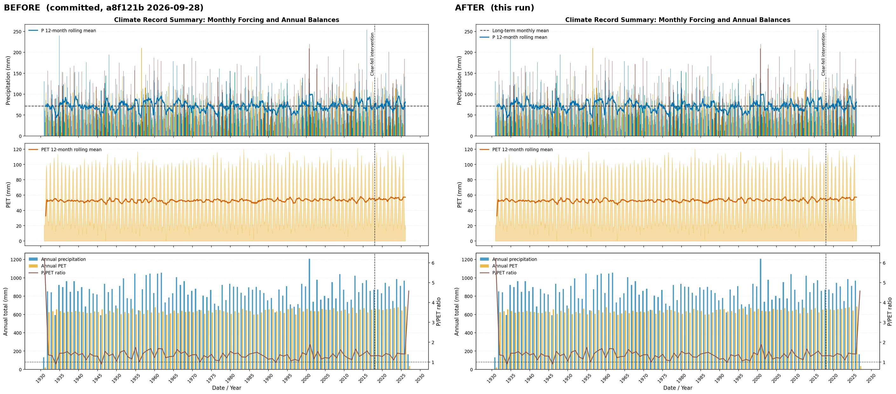
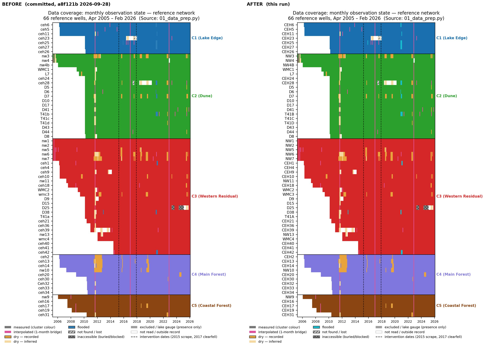
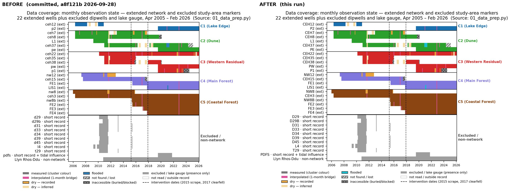
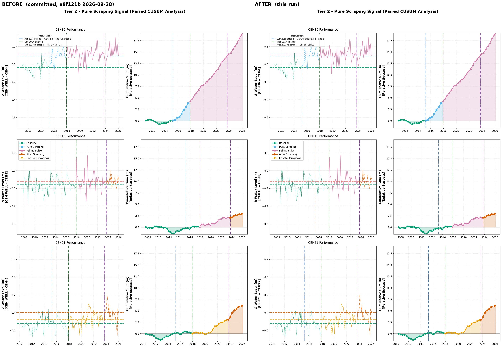
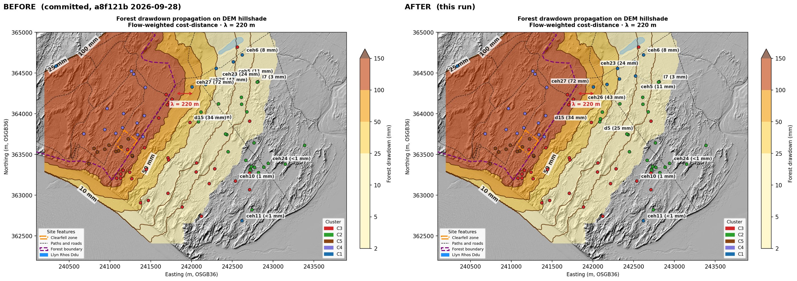
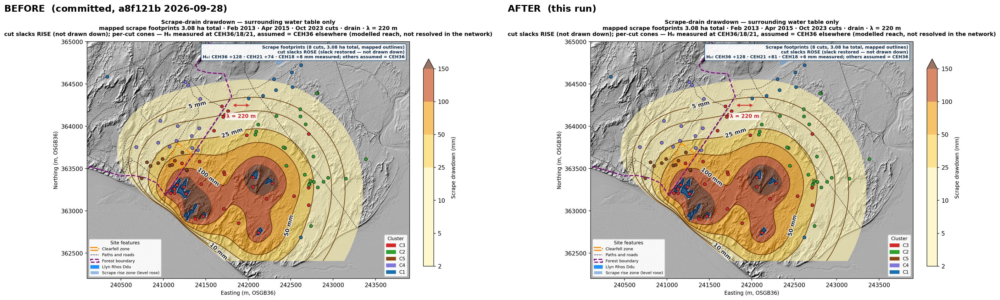
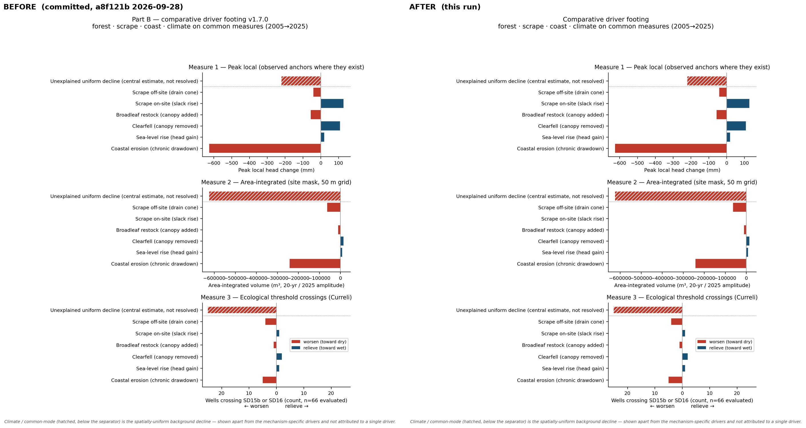

Figure review — before (git HEAD a8f121b 2026-09-28) and after (this run)
outputs/00_climate_summary/00_01_climate_timeseries.png

outputs/01_data_prep/01_coverage_states_reference.png

outputs/01_data_prep/01_coverage_states_extended.png

outputs/09_scraping_intervention/09_scrape_06_tier2_scraping_signal.png

outputs/20_spatial_figures/20_drawdown_propagation_nohead.png

outputs/20_spatial_figures/20_scrape_drawdown_nohead.png

outputs/37b_driver_footing/37b_driver_footing.png
